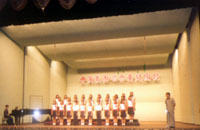

- performance -
 |
5 Twenty-three years and still going strong, used by tens of thousands worldwide. . Each is a robust, full-featured and high-performance compiler from the largest and most experienced Fortran team in the industry. The world's best-selling Fortran compiler for Windows, featuring Compaq Array Visualizer (Professional and Enterprise Editions. ) Get an update on the convergence of Compaq Visual Fortran and Intel Fortran for Windows. |
|  |
. 6, 1962) 100 performances in 72 cities in US and Canada The Choir with Bob Pierce, Founder of World Vision Dr. Soo Chul Chang conducting the Choir 2nd Performance Tour (Oct. 31, 1966) 98 performances in 90 cities in US, Canada and Bermuda Choir members in traditional costume with traditional musical instruments Bob Pierce and the Choir caressing a baby elephant at the New York World Exhibition Hong Hye Kyung(left in the front row) with other Choir members Arriving at Seoul Kimpo Airport after a long performance tour 4th Performance Tour (Aug. Johnson in Los Angeles county 7th Performance Tour (Oct. |
.Help evaluate a new question answering search engine. A synergistic opportunity exists in the application of visual programming methods to the realm of high-performance computing. Here, we highlight the motivations of high-performance computing, system characteristics, and design considerations for a new software programming paradigm. 1 Introduction For many end users in engineering and science, computing is a tool for problem formulation, analysis, and solution.
|
|
The AVCATT-A's virtual training environment supports simulated interactive combat. . SGI to provide high-performance visual systems for U. Army AVCATT-A SGI to provide high-performance visual systems for U. Army AVCATT-A Mountain View 20 Apr 00 SGI will provide its advanced high-performance visual computing equipment and servers to power the U. |
also look at: http://www.sql-server-performance.com/w3c/p3p.xml